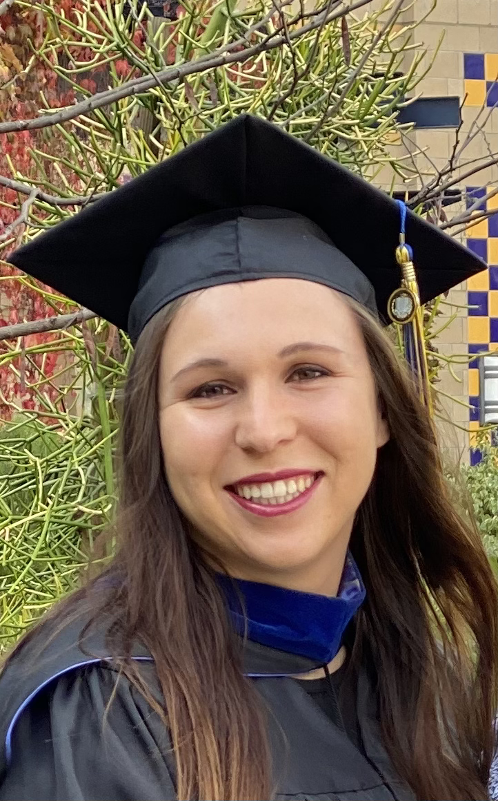

Hello!
My name is Alex Hussar, and I am currently pursuing my Ph.D. in Computer Science at the Georgia Institute of Technology under the guidance of Professor Santosh Pande. My research interests include static analysis, dynamic analysis, symbolic execution, and software exploitation. My educational background consists of a Bachelor of Science in Mathematics from the University of the Pacific in Stockton, CA, and a Master of Computer Science (MCS) from the University of California, Irvine.
Before starting my Ph.D., I gained experience as a Cybersecurity Engineer (more specifically, an Information Systems Security Engineer, or ISSE) at an Electronic Defense Company. I specialized in securing large interconnected systems during my three years in this role. This role furthered my interest in Cybersecurity, software assurance, and digital infrastructure integrity. Currently, I am a full-time researcher at the Georgia Tech Research Institute (GTRI) within the Software Assurance branch, where I'm dedicated to advancing the field of software security and analysis.
On a more personal note, I've always been an enthusiast for physical activity and sports. During my time at the University of the Pacific, I was a D1 soccer player and had the privilege of captaining the team. Though my soccer journey took an unexpected turn due to injury, I've become more involved in CrossFit and its community. Today, I actively engage in local CrossFit competitions and serve as a CrossFit Coach at a local gym here in Atlanta. Outside my professional and fitness pursuits, I share my life with two dogs and a husband.
